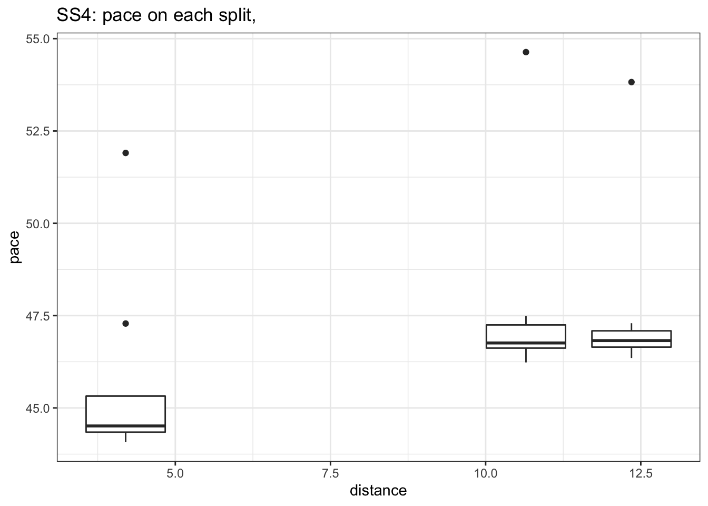
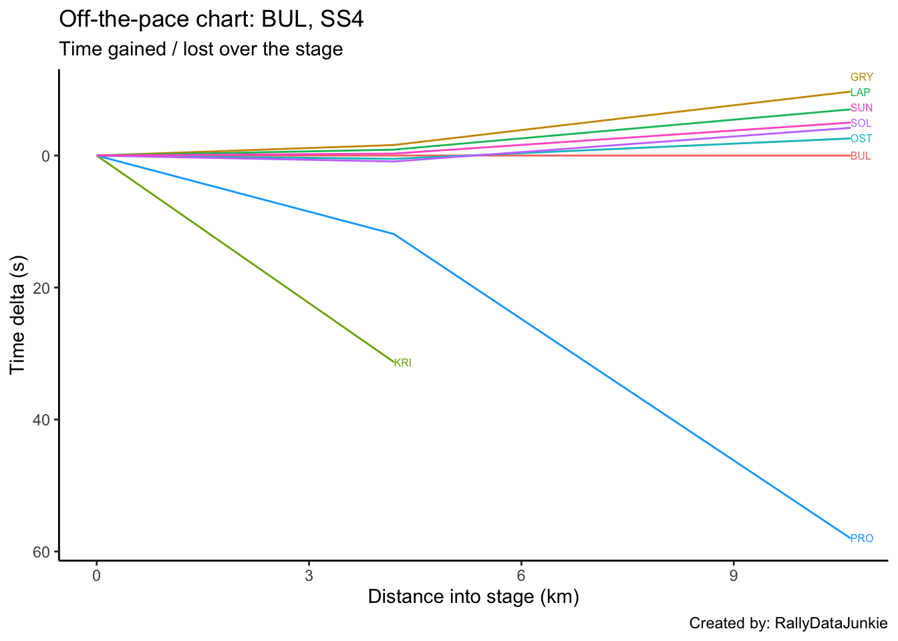
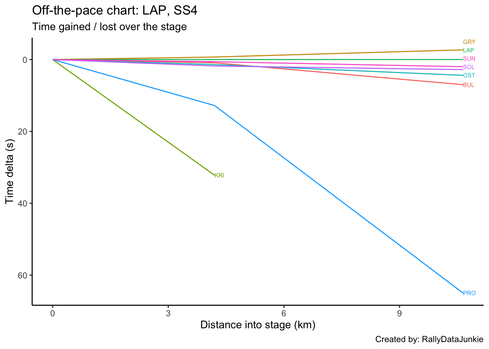
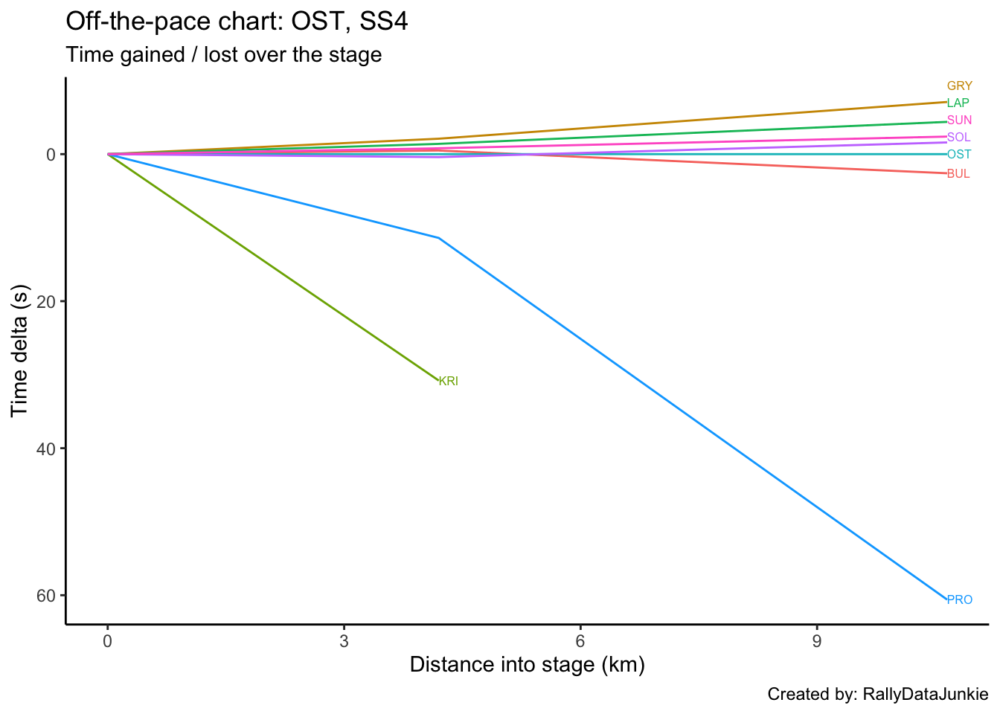
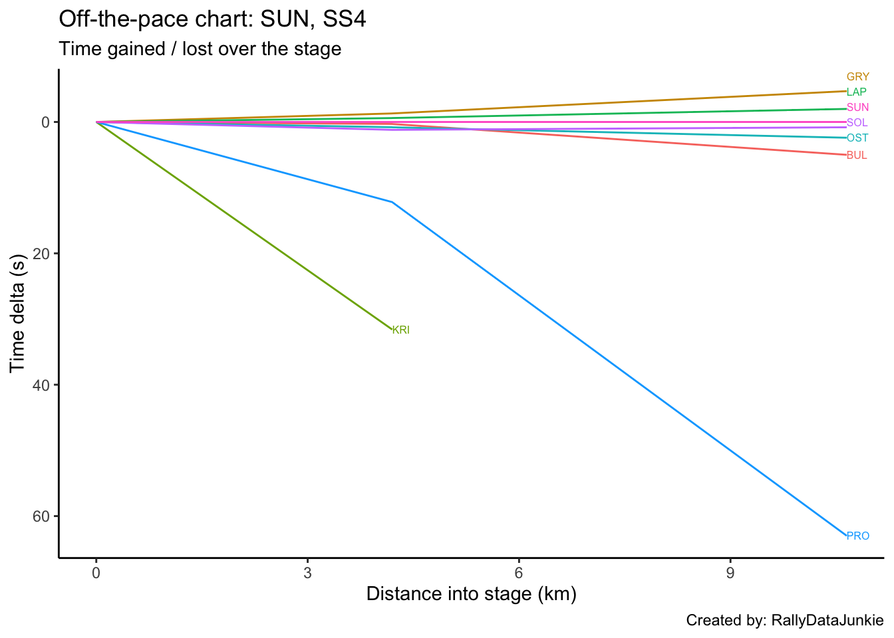
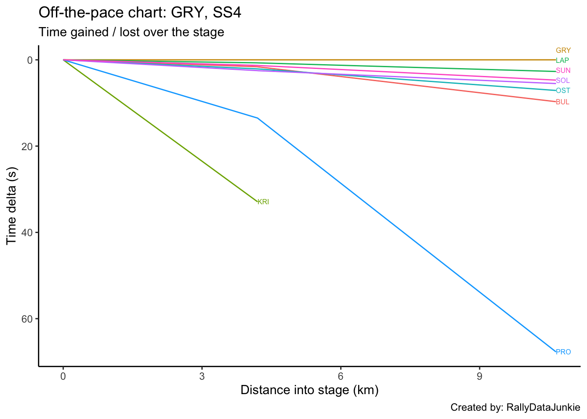
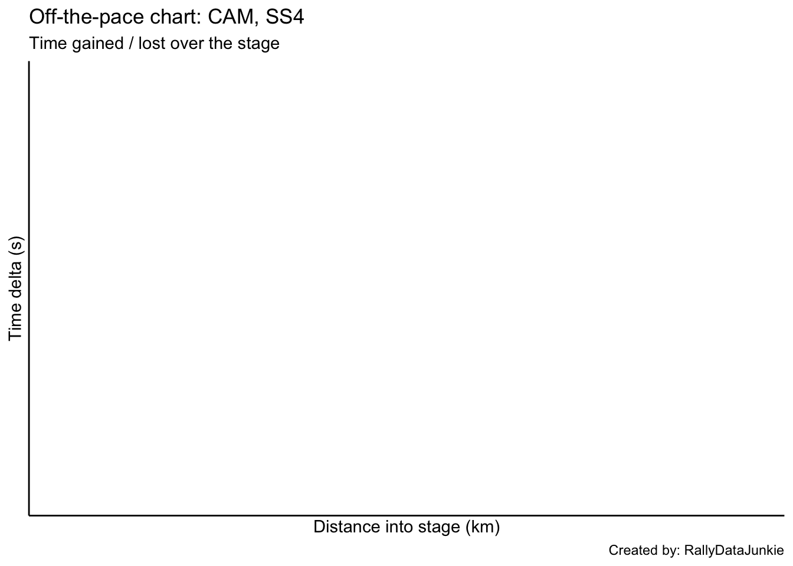
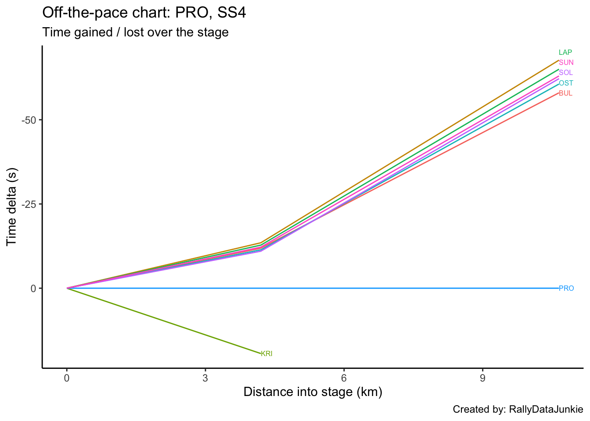
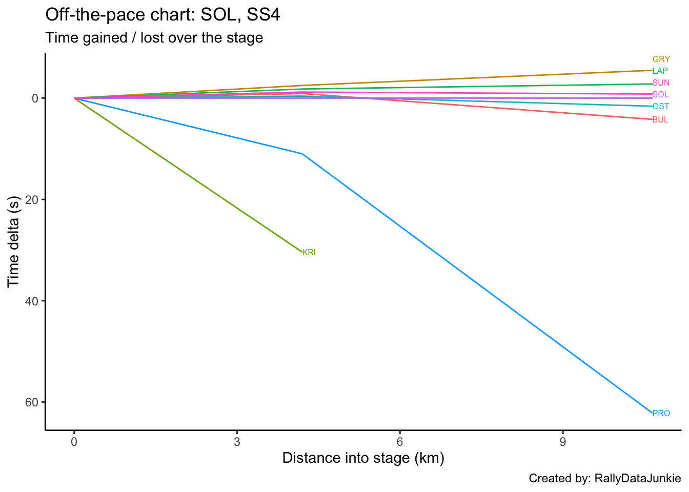
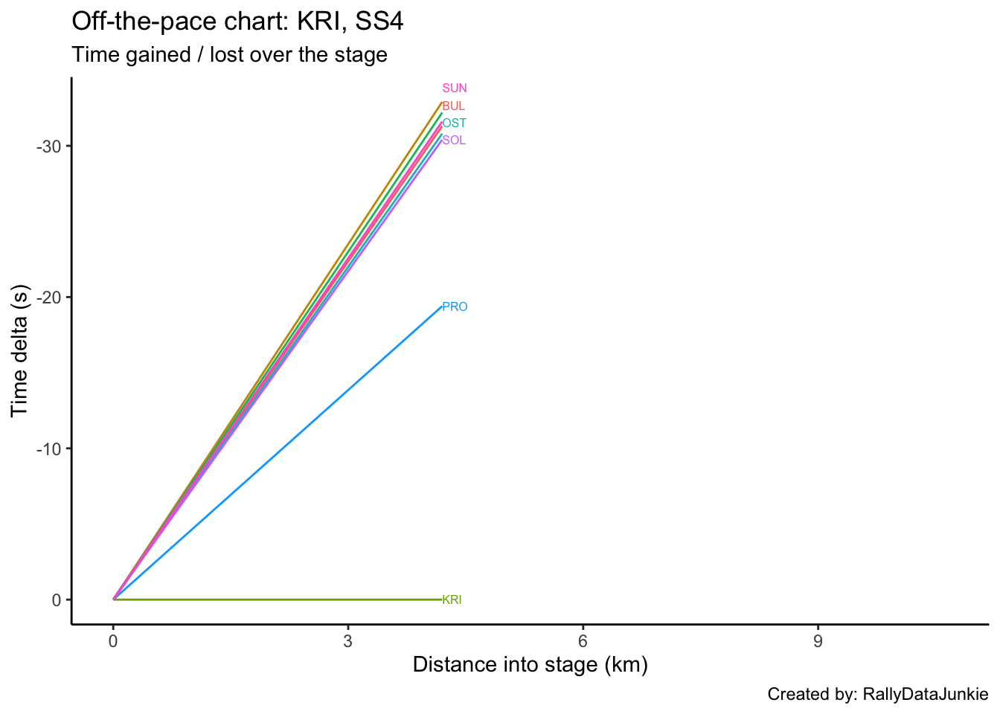

4 SS4 Results
| Pos | Car | Code | Time (s) | Gap | Diff |
|---|---|---|---|---|---|
| 1 | 25 | GRY | 562.1 | 19.5 | 10.9 |
| 2 | 22 | LAP | 565.5 | 22.9 | 3.4 |
| 3 | 24 | SUN | 567.1 | 24.5 | 1.6 |
| 4 | 30 | SOL | 568.5 | 25.9 | 1.1 |
| 5 | 23 | OST | 570.0 | 27.4 | 0.2 |
| 6 | 21 | BUL | 573.4 | 30.8 | 3.0 |
| 7 | 28 | PRO | 642.5 | 99.9 | 2.0 |
| 8 | 26 | CAM | 1162.1 | 619.5 | 19.5 |
| 9 | 31 | KRI | 1162.1 | 619.5 | 0.0 |
4.1 Stage SS4 Splits Analysis
Reports on splits
4.1.1 Split Locations
Length of each split section in km:
| full_split_distances | stage_dist | |
|---|---|---|
| split_1 | 4.20 | 4.20 |
| split_2 | 6.45 | 10.65 |
| split_N | 1.70 | 12.35 |
4.1.2 Stage Split Times & Result
Summary of stage split times and overall stage result:
| code | split_1 | split_2 | split_N | diffFirstS | position |
|---|---|---|---|---|---|
| GRY | 185.1 | 483.3 | 562.1 | 0.0 | 10 |
| LAP | 185.8 | 486.0 | 565.5 | 3.4 | 11 |
| SUN | 186.4 | 488.0 | 567.1 | 5.0 | 12 |
| SOL | 187.6 | 488.8 | 568.5 | 6.4 | 14 |
| OST | 187.2 | 490.4 | 570.0 | 7.9 | 16 |
| BUL | 186.7 | 493.0 | 573.4 | 11.3 | 18 |
| PRO | 198.6 | 551.0 | 642.5 | 80.4 | 49 |
| KRI | 218.0 | NA | 1162.1 | 600.0 | 67 |
4.1.3 Split Time Rankings
Rank of each split time:
| code | split_1 | split_2 | split_N |
|---|---|---|---|
| GRY | 1 | 1 | 1 |
| LAP | 2 | 2 | 2 |
| SUN | 3 | 3 | 3 |
| SOL | 6 | 4 | 4 |
| OST | 5 | 5 | 5 |
| BUL | 4 | 6 | 6 |
| PRO | 7 | 7 | 7 |
Rank on each split section:
| code | split_1 | split_2 | split_N |
|---|---|---|---|
| GRY | 1 | 1 | 1 |
| LAP | 2 | 2 | 2 |
| SUN | 3 | 3 | 3 |
| SOL | 6 | 4 | 4 |
| OST | 5 | 5 | 5 |
| BUL | 4 | 6 | 6 |
| PRO | 7 | 7 | 7 |
4.1.4 Split Section Pace
Pace is measured in seconds per kilometer, which is to say, how long it takes to complete each kilometer (lower is better):
| code | split_1 | split_2 | split_N |
|---|---|---|---|
| GRY | 44.07 | 46.23 | 46.35 |
| LAP | 44.24 | 46.54 | 46.76 |
| SUN | 44.38 | 46.76 | 46.53 |
| SOL | 44.67 | 46.70 | 46.88 |
| OST | 44.57 | 47.01 | 46.82 |
| BUL | 44.45 | 47.49 | 47.29 |
| PRO | 47.29 | 54.64 | 53.82 |
| KRI | 51.90 | NA | NA |
4.1.5 Ultimate Stage Comparisons
Split time comparisons relative to various ultimage stage time calculations.
These views provide various ways of comparing the performance of each driver to various ghost drivers:
- best recorded split time at each split (ultimate actuals): gives an estimate of how well the driver’s split times compare with each first ranked split time (time into stage at each split);
- fastest time going from one split to the next (ultimate sections): gives an estimate of how quickly each driver completed each split section relative to the quickest time recorded completing that split section (time taken to go from one split point to the next);
- accumulated ultimate sections times: gives and estimate of how quickly the driver is going relative to the fastest possible completion of the stage based on accumulated ultimate split section times.
4.1.5.1 Ultimate Actuals
Driver times compared to the first ranked recorded split time at each split:
| code | split_1 | split_2 | split_N |
|---|---|---|---|
| GRY | 0.0 | 0.0 | 0.0 |
| LAP | 0.7 | 2.7 | 3.4 |
| SUN | 1.3 | 4.7 | 5.0 |
| SOL | 2.5 | 5.5 | 6.4 |
| OST | 2.1 | 7.1 | 7.9 |
| BUL | 1.6 | 9.7 | 11.3 |
| PRO | 13.5 | 67.7 | 80.4 |
| ultimate | 0.0 | 0.0 | 0.0 |
4.1.5.2 Ultimate Sections
Split durations rebased relative to the fastest transit of each split section:
| code | split_1 | split_2 | split_N |
|---|---|---|---|
| GRY | 0.0 | 0.0 | 0.0 |
| LAP | 0.7 | 2.0 | 0.7 |
| SUN | 1.3 | 3.4 | 0.3 |
| SOL | 2.5 | 3.0 | 0.9 |
| OST | 2.1 | 5.0 | 0.8 |
| BUL | 1.6 | 8.1 | 1.6 |
| PRO | 13.5 | 54.2 | 12.7 |
| ultimate | 0.0 | 0.0 | 0.0 |
4.1.5.3 Ultimate Accumulated Sections
Actual split times relative to the accumulated ultimate split section times:
| code | split_1 | split_2 | split_N |
|---|---|---|---|
| GRY | 0.0 | 0.0 | 0.0 |
| LAP | 0.7 | 2.7 | 3.4 |
| SUN | 1.3 | 4.7 | 5.0 |
| SOL | 2.5 | 5.5 | 6.4 |
| OST | 2.1 | 7.1 | 7.9 |
| BUL | 1.6 | 9.7 | 11.3 |
| PRO | 13.5 | 67.7 | 80.4 |
| ultimate | 0.0 | 0.0 | 0.0 |
4.1.6 Split Section Pace Distribution
Distribution of pace values for each split section:

4.2 Driver Report, SS4 - MIK
No stage report for MIK.
4.3 Driver Report, SS4 - BUL
Stage report for BUL.
| Pos | Car | Code | Time (s) | Gap | Diff |
|---|---|---|---|---|---|
| 10 | 25 | GRY | -11.3 | -11.3 | 10.9 |
| 11 | 22 | LAP | -7.9 | -7.9 | 3.4 |
| 12 | 24 | SUN | -6.3 | -6.3 | 1.6 |
| 14 | 30 | SOL | -4.9 | -4.9 | 1.1 |
| 16 | 23 | OST | -3.4 | -3.4 | 0.2 |
| 18 | 21 | BUL | 0.0 | 0.0 | 3.0 |
| 49 | 28 | PRO | 69.1 | 69.1 | 2.0 |
| 66 | 26 | CAM | 588.7 | 588.7 | 19.5 |
| 67 | 31 | KRI | 588.7 | 588.7 | 0.0 |
4.3.1 Rebased Split Times
BUL’s delta at each split compared to other drivers.
| code | split_1 | split_2 | split_N |
|---|---|---|---|
| GRY | -1.6 | -9.7 | -11.3 |
| LAP | -0.9 | -7.0 | -7.9 |
| SUN | -0.3 | -5.0 | -6.3 |
| SOL | 0.9 | -4.2 | -4.9 |
| OST | 0.5 | -2.6 | -3.4 |
| BUL | 0.0 | 0.0 | 0.0 |
| PRO | 11.9 | 58.0 | 69.1 |
| KRI | 31.3 | NA | 588.7 |
Accumulated stage time deltas at each split:

4.3.2 Within-Split Duration Deltas
BUL’s delta in time to complete each split section compared to other drivers:
| code | split_1 | split_2 | split_N |
|---|---|---|---|
| GRY | -1.6 | -8.1 | -1.6 |
| LAP | -0.9 | -6.1 | -0.9 |
| SUN | -0.3 | -4.7 | -1.3 |
| SOL | 0.9 | -5.1 | -0.7 |
| OST | 0.5 | -3.1 | -0.8 |
| BUL | 0.0 | 0.0 | 0.0 |
| PRO | 11.9 | 46.1 | 11.1 |
| KRI | 31.3 | NA | NA |
4.3.3 Within-Split Pace Deltas
| code | split_1 | split_2 | split_N |
|---|---|---|---|
| GRY | -0.38 | -1.26 | -0.94 |
| LAP | -0.21 | -0.95 | -0.53 |
| SUN | -0.07 | -0.73 | -0.76 |
| SOL | 0.21 | -0.79 | -0.41 |
| OST | 0.12 | -0.48 | -0.47 |
| BUL | 0.00 | 0.00 | 0.00 |
| PRO | 2.83 | 7.15 | 6.53 |
| KRI | 7.45 | NA | NA |
4.4 Driver Report, SS4 - LAP
Stage report for LAP.
| Pos | Car | Code | Time (s) | Gap | Diff |
|---|---|---|---|---|---|
| 10 | 25 | GRY | -3.4 | -3.4 | 10.9 |
| 11 | 22 | LAP | 0.0 | 0.0 | 3.4 |
| 12 | 24 | SUN | 1.6 | 1.6 | 1.6 |
| 14 | 30 | SOL | 3.0 | 3.0 | 1.1 |
| 16 | 23 | OST | 4.5 | 4.5 | 0.2 |
| 18 | 21 | BUL | 7.9 | 7.9 | 3.0 |
| 49 | 28 | PRO | 77.0 | 77.0 | 2.0 |
| 66 | 26 | CAM | 596.6 | 596.6 | 19.5 |
| 67 | 31 | KRI | 596.6 | 596.6 | 0.0 |
4.4.1 Rebased Split Times
LAP’s delta at each split compared to other drivers.
| code | split_1 | split_2 | split_N |
|---|---|---|---|
| GRY | -0.7 | -2.7 | -3.4 |
| LAP | 0.0 | 0.0 | 0.0 |
| SUN | 0.6 | 2.0 | 1.6 |
| SOL | 1.8 | 2.8 | 3.0 |
| OST | 1.4 | 4.4 | 4.5 |
| BUL | 0.9 | 7.0 | 7.9 |
| PRO | 12.8 | 65.0 | 77.0 |
| KRI | 32.2 | NA | 596.6 |
Accumulated stage time deltas at each split:

4.4.2 Within-Split Duration Deltas
LAP’s delta in time to complete each split section compared to other drivers:
| code | split_1 | split_2 | split_N |
|---|---|---|---|
| GRY | -0.7 | -2.0 | -0.7 |
| LAP | 0.0 | 0.0 | 0.0 |
| SUN | 0.6 | 1.4 | -0.4 |
| SOL | 1.8 | 1.0 | 0.2 |
| OST | 1.4 | 3.0 | 0.1 |
| BUL | 0.9 | 6.1 | 0.9 |
| PRO | 12.8 | 52.2 | 12.0 |
| KRI | 32.2 | NA | NA |
4.4.3 Within-Split Pace Deltas
| code | split_1 | split_2 | split_N |
|---|---|---|---|
| GRY | -0.17 | -0.31 | -0.41 |
| LAP | 0.00 | 0.00 | 0.00 |
| SUN | 0.14 | 0.22 | -0.24 |
| SOL | 0.43 | 0.16 | 0.12 |
| OST | 0.33 | 0.47 | 0.06 |
| BUL | 0.21 | 0.95 | 0.53 |
| PRO | 3.05 | 8.09 | 7.06 |
| KRI | 7.67 | NA | NA |
4.5 Driver Report, SS4 - OST
Stage report for OST.
| Pos | Car | Code | Time (s) | Gap | Diff |
|---|---|---|---|---|---|
| 10 | 25 | GRY | -7.9 | -7.9 | 10.9 |
| 11 | 22 | LAP | -4.5 | -4.5 | 3.4 |
| 12 | 24 | SUN | -2.9 | -2.9 | 1.6 |
| 14 | 30 | SOL | -1.5 | -1.5 | 1.1 |
| 16 | 23 | OST | 0.0 | 0.0 | 0.2 |
| 18 | 21 | BUL | 3.4 | 3.4 | 3.0 |
| 49 | 28 | PRO | 72.5 | 72.5 | 2.0 |
| 66 | 26 | CAM | 592.1 | 592.1 | 19.5 |
| 67 | 31 | KRI | 592.1 | 592.1 | 0.0 |
4.5.1 Rebased Split Times
OST’s delta at each split compared to other drivers.
| code | split_1 | split_2 | split_N |
|---|---|---|---|
| GRY | -2.1 | -7.1 | -7.9 |
| LAP | -1.4 | -4.4 | -4.5 |
| SUN | -0.8 | -2.4 | -2.9 |
| SOL | 0.4 | -1.6 | -1.5 |
| OST | 0.0 | 0.0 | 0.0 |
| BUL | -0.5 | 2.6 | 3.4 |
| PRO | 11.4 | 60.6 | 72.5 |
| KRI | 30.8 | NA | 592.1 |
Accumulated stage time deltas at each split:

4.5.2 Within-Split Duration Deltas
OST’s delta in time to complete each split section compared to other drivers:
| code | split_1 | split_2 | split_N |
|---|---|---|---|
| GRY | -2.1 | -5.0 | -0.8 |
| LAP | -1.4 | -3.0 | -0.1 |
| SUN | -0.8 | -1.6 | -0.5 |
| SOL | 0.4 | -2.0 | 0.1 |
| OST | 0.0 | 0.0 | 0.0 |
| BUL | -0.5 | 3.1 | 0.8 |
| PRO | 11.4 | 49.2 | 11.9 |
| KRI | 30.8 | NA | NA |
4.5.3 Within-Split Pace Deltas
| code | split_1 | split_2 | split_N |
|---|---|---|---|
| GRY | -0.50 | -0.78 | -0.47 |
| LAP | -0.33 | -0.47 | -0.06 |
| SUN | -0.19 | -0.25 | -0.29 |
| SOL | 0.10 | -0.31 | 0.06 |
| OST | 0.00 | 0.00 | 0.00 |
| BUL | -0.12 | 0.48 | 0.47 |
| PRO | 2.71 | 7.63 | 7.00 |
| KRI | 7.33 | NA | NA |
4.6 Driver Report, SS4 - SUN
Stage report for SUN.
| Pos | Car | Code | Time (s) | Gap | Diff |
|---|---|---|---|---|---|
| 10 | 25 | GRY | -5.0 | -5.0 | 10.9 |
| 11 | 22 | LAP | -1.6 | -1.6 | 3.4 |
| 12 | 24 | SUN | 0.0 | 0.0 | 1.6 |
| 14 | 30 | SOL | 1.4 | 1.4 | 1.1 |
| 16 | 23 | OST | 2.9 | 2.9 | 0.2 |
| 18 | 21 | BUL | 6.3 | 6.3 | 3.0 |
| 49 | 28 | PRO | 75.4 | 75.4 | 2.0 |
| 66 | 26 | CAM | 595.0 | 595.0 | 19.5 |
| 67 | 31 | KRI | 595.0 | 595.0 | 0.0 |
4.6.1 Rebased Split Times
SUN’s delta at each split compared to other drivers.
| code | split_1 | split_2 | split_N |
|---|---|---|---|
| GRY | -1.3 | -4.7 | -5.0 |
| LAP | -0.6 | -2.0 | -1.6 |
| SUN | 0.0 | 0.0 | 0.0 |
| SOL | 1.2 | 0.8 | 1.4 |
| OST | 0.8 | 2.4 | 2.9 |
| BUL | 0.3 | 5.0 | 6.3 |
| PRO | 12.2 | 63.0 | 75.4 |
| KRI | 31.6 | NA | 595.0 |
Accumulated stage time deltas at each split:

4.6.2 Within-Split Duration Deltas
SUN’s delta in time to complete each split section compared to other drivers:
| code | split_1 | split_2 | split_N |
|---|---|---|---|
| GRY | -1.3 | -3.4 | -0.3 |
| LAP | -0.6 | -1.4 | 0.4 |
| SUN | 0.0 | 0.0 | 0.0 |
| SOL | 1.2 | -0.4 | 0.6 |
| OST | 0.8 | 1.6 | 0.5 |
| BUL | 0.3 | 4.7 | 1.3 |
| PRO | 12.2 | 50.8 | 12.4 |
| KRI | 31.6 | NA | NA |
4.6.3 Within-Split Pace Deltas
| code | split_1 | split_2 | split_N |
|---|---|---|---|
| GRY | -0.31 | -0.53 | -0.18 |
| LAP | -0.14 | -0.22 | 0.24 |
| SUN | 0.00 | 0.00 | 0.00 |
| SOL | 0.29 | -0.06 | 0.35 |
| OST | 0.19 | 0.25 | 0.29 |
| BUL | 0.07 | 0.73 | 0.76 |
| PRO | 2.90 | 7.88 | 7.29 |
| KRI | 7.52 | NA | NA |
4.7 Driver Report, SS4 - GRY
Stage report for GRY.
| Pos | Car | Code | Time (s) | Gap | Diff |
|---|---|---|---|---|---|
| 10 | 25 | GRY | 0.0 | 0.0 | 10.9 |
| 11 | 22 | LAP | 3.4 | 3.4 | 3.4 |
| 12 | 24 | SUN | 5.0 | 5.0 | 1.6 |
| 14 | 30 | SOL | 6.4 | 6.4 | 1.1 |
| 16 | 23 | OST | 7.9 | 7.9 | 0.2 |
| 18 | 21 | BUL | 11.3 | 11.3 | 3.0 |
| 49 | 28 | PRO | 80.4 | 80.4 | 2.0 |
| 66 | 26 | CAM | 600.0 | 600.0 | 19.5 |
| 67 | 31 | KRI | 600.0 | 600.0 | 0.0 |
4.7.1 Rebased Split Times
GRY’s delta at each split compared to other drivers.
| code | split_1 | split_2 | split_N |
|---|---|---|---|
| GRY | 0.0 | 0.0 | 0.0 |
| LAP | 0.7 | 2.7 | 3.4 |
| SUN | 1.3 | 4.7 | 5.0 |
| SOL | 2.5 | 5.5 | 6.4 |
| OST | 2.1 | 7.1 | 7.9 |
| BUL | 1.6 | 9.7 | 11.3 |
| PRO | 13.5 | 67.7 | 80.4 |
| KRI | 32.9 | NA | 600.0 |
Accumulated stage time deltas at each split:

4.7.2 Within-Split Duration Deltas
GRY’s delta in time to complete each split section compared to other drivers:
| code | split_1 | split_2 | split_N |
|---|---|---|---|
| GRY | 0.0 | 0.0 | 0.0 |
| LAP | 0.7 | 2.0 | 0.7 |
| SUN | 1.3 | 3.4 | 0.3 |
| SOL | 2.5 | 3.0 | 0.9 |
| OST | 2.1 | 5.0 | 0.8 |
| BUL | 1.6 | 8.1 | 1.6 |
| PRO | 13.5 | 54.2 | 12.7 |
| KRI | 32.9 | NA | NA |
4.7.3 Within-Split Pace Deltas
| code | split_1 | split_2 | split_N |
|---|---|---|---|
| GRY | 0.00 | 0.00 | 0.00 |
| LAP | 0.17 | 0.31 | 0.41 |
| SUN | 0.31 | 0.53 | 0.18 |
| SOL | 0.60 | 0.47 | 0.53 |
| OST | 0.50 | 0.78 | 0.47 |
| BUL | 0.38 | 1.26 | 0.94 |
| PRO | 3.21 | 8.40 | 7.47 |
| KRI | 7.83 | NA | NA |
4.8 Driver Report, SS4 - CAM
Stage report for CAM.
| Pos | Car | Code | Time (s) | Gap | Diff |
|---|---|---|---|---|---|
| 10 | 25 | GRY | -600.0 | -600.0 | 10.9 |
| 11 | 22 | LAP | -596.6 | -596.6 | 3.4 |
| 12 | 24 | SUN | -595.0 | -595.0 | 1.6 |
| 14 | 30 | SOL | -593.6 | -593.6 | 1.1 |
| 16 | 23 | OST | -592.1 | -592.1 | 0.2 |
| 18 | 21 | BUL | -588.7 | -588.7 | 3.0 |
| 49 | 28 | PRO | -519.6 | -519.6 | 2.0 |
| 66 | 26 | CAM | 0.0 | 0.0 | 19.5 |
| 67 | 31 | KRI | 0.0 | 0.0 | 0.0 |
4.8.1 Rebased Split Times
CAM’s delta at each split compared to other drivers.
| code | split_1 | split_2 | split_N |
|---|---|---|---|
Accumulated stage time deltas at each split:

4.8.2 Within-Split Duration Deltas
CAM’s delta in time to complete each split section compared to other drivers:
| code | split_1 | split_2 | split_N |
|---|---|---|---|
4.8.3 Within-Split Pace Deltas
| code | split_1 | split_2 | split_N |
|---|---|---|---|
4.9 Driver Report, SS4 - VEI
No stage report for VEI.
4.10 Driver Report, SS4 - PRO
Stage report for PRO.
| Pos | Car | Code | Time (s) | Gap | Diff |
|---|---|---|---|---|---|
| 10 | 25 | GRY | -80.4 | -80.4 | 10.9 |
| 11 | 22 | LAP | -77.0 | -77.0 | 3.4 |
| 12 | 24 | SUN | -75.4 | -75.4 | 1.6 |
| 14 | 30 | SOL | -74.0 | -74.0 | 1.1 |
| 16 | 23 | OST | -72.5 | -72.5 | 0.2 |
| 18 | 21 | BUL | -69.1 | -69.1 | 3.0 |
| 49 | 28 | PRO | 0.0 | 0.0 | 2.0 |
| 66 | 26 | CAM | 519.6 | 519.6 | 19.5 |
| 67 | 31 | KRI | 519.6 | 519.6 | 0.0 |
4.10.1 Rebased Split Times
PRO’s delta at each split compared to other drivers.
| code | split_1 | split_2 | split_N |
|---|---|---|---|
| GRY | -13.5 | -67.7 | -80.4 |
| LAP | -12.8 | -65.0 | -77.0 |
| SUN | -12.2 | -63.0 | -75.4 |
| SOL | -11.0 | -62.2 | -74.0 |
| OST | -11.4 | -60.6 | -72.5 |
| BUL | -11.9 | -58.0 | -69.1 |
| PRO | 0.0 | 0.0 | 0.0 |
| KRI | 19.4 | NA | 519.6 |
Accumulated stage time deltas at each split:

4.10.2 Within-Split Duration Deltas
PRO’s delta in time to complete each split section compared to other drivers:
| code | split_1 | split_2 | split_N |
|---|---|---|---|
| GRY | -13.5 | -54.2 | -12.7 |
| LAP | -12.8 | -52.2 | -12.0 |
| SUN | -12.2 | -50.8 | -12.4 |
| SOL | -11.0 | -51.2 | -11.8 |
| OST | -11.4 | -49.2 | -11.9 |
| BUL | -11.9 | -46.1 | -11.1 |
| PRO | 0.0 | 0.0 | 0.0 |
| KRI | 19.4 | NA | NA |
4.10.3 Within-Split Pace Deltas
| code | split_1 | split_2 | split_N |
|---|---|---|---|
| GRY | -3.21 | -8.40 | -7.47 |
| LAP | -3.05 | -8.09 | -7.06 |
| SUN | -2.90 | -7.88 | -7.29 |
| SOL | -2.62 | -7.94 | -6.94 |
| OST | -2.71 | -7.63 | -7.00 |
| BUL | -2.83 | -7.15 | -6.53 |
| PRO | 0.00 | 0.00 | 0.00 |
| KRI | 4.62 | NA | NA |
4.11 Driver Report, SS4 - LIN
No stage report for LIN.
4.12 Driver Report, SS4 - SOL
Stage report for SOL.
| Pos | Car | Code | Time (s) | Gap | Diff |
|---|---|---|---|---|---|
| 10 | 25 | GRY | -6.4 | -6.4 | 10.9 |
| 11 | 22 | LAP | -3.0 | -3.0 | 3.4 |
| 12 | 24 | SUN | -1.4 | -1.4 | 1.6 |
| 14 | 30 | SOL | 0.0 | 0.0 | 1.1 |
| 16 | 23 | OST | 1.5 | 1.5 | 0.2 |
| 18 | 21 | BUL | 4.9 | 4.9 | 3.0 |
| 49 | 28 | PRO | 74.0 | 74.0 | 2.0 |
| 66 | 26 | CAM | 593.6 | 593.6 | 19.5 |
| 67 | 31 | KRI | 593.6 | 593.6 | 0.0 |
4.12.1 Rebased Split Times
SOL’s delta at each split compared to other drivers.
| code | split_1 | split_2 | split_N |
|---|---|---|---|
| GRY | -2.5 | -5.5 | -6.4 |
| LAP | -1.8 | -2.8 | -3.0 |
| SUN | -1.2 | -0.8 | -1.4 |
| SOL | 0.0 | 0.0 | 0.0 |
| OST | -0.4 | 1.6 | 1.5 |
| BUL | -0.9 | 4.2 | 4.9 |
| PRO | 11.0 | 62.2 | 74.0 |
| KRI | 30.4 | NA | 593.6 |
Accumulated stage time deltas at each split:

4.12.2 Within-Split Duration Deltas
SOL’s delta in time to complete each split section compared to other drivers:
| code | split_1 | split_2 | split_N |
|---|---|---|---|
| GRY | -2.5 | -3.0 | -0.9 |
| LAP | -1.8 | -1.0 | -0.2 |
| SUN | -1.2 | 0.4 | -0.6 |
| SOL | 0.0 | 0.0 | 0.0 |
| OST | -0.4 | 2.0 | -0.1 |
| BUL | -0.9 | 5.1 | 0.7 |
| PRO | 11.0 | 51.2 | 11.8 |
| KRI | 30.4 | NA | NA |
4.12.3 Within-Split Pace Deltas
| code | split_1 | split_2 | split_N |
|---|---|---|---|
| GRY | -0.60 | -0.47 | -0.53 |
| LAP | -0.43 | -0.16 | -0.12 |
| SUN | -0.29 | 0.06 | -0.35 |
| SOL | 0.00 | 0.00 | 0.00 |
| OST | -0.10 | 0.31 | -0.06 |
| BUL | -0.21 | 0.79 | 0.41 |
| PRO | 2.62 | 7.94 | 6.94 |
| KRI | 7.24 | NA | NA |
4.13 Driver Report, SS4 - KRI
Stage report for KRI.
| Pos | Car | Code | Time (s) | Gap | Diff |
|---|---|---|---|---|---|
| 10 | 25 | GRY | -600.0 | -600.0 | 10.9 |
| 11 | 22 | LAP | -596.6 | -596.6 | 3.4 |
| 12 | 24 | SUN | -595.0 | -595.0 | 1.6 |
| 14 | 30 | SOL | -593.6 | -593.6 | 1.1 |
| 16 | 23 | OST | -592.1 | -592.1 | 0.2 |
| 18 | 21 | BUL | -588.7 | -588.7 | 3.0 |
| 49 | 28 | PRO | -519.6 | -519.6 | 2.0 |
| 66 | 26 | CAM | 0.0 | 0.0 | 19.5 |
| 67 | 31 | KRI | 0.0 | 0.0 | 0.0 |
4.13.1 Rebased Split Times
KRI’s delta at each split compared to other drivers.
| code | split_1 | split_2 | split_N |
|---|---|---|---|
| GRY | -32.9 | NA | -600.0 |
| LAP | -32.2 | NA | -596.6 |
| SUN | -31.6 | NA | -595.0 |
| SOL | -30.4 | NA | -593.6 |
| OST | -30.8 | NA | -592.1 |
| BUL | -31.3 | NA | -588.7 |
| PRO | -19.4 | NA | -519.6 |
| KRI | 0.0 | NA | 0.0 |
Accumulated stage time deltas at each split:

4.13.2 Within-Split Duration Deltas
KRI’s delta in time to complete each split section compared to other drivers:
| code | split_1 | split_2 | split_N |
|---|---|---|---|
| GRY | -32.9 | NA | NA |
| LAP | -32.2 | NA | NA |
| SUN | -31.6 | NA | NA |
| SOL | -30.4 | NA | NA |
| OST | -30.8 | NA | NA |
| BUL | -31.3 | NA | NA |
| PRO | -19.4 | NA | NA |
| KRI | 0.0 | NA | NA |
4.13.3 Within-Split Pace Deltas
| code | split_1 | split_2 | split_N |
|---|---|---|---|
| GRY | -7.83 | NA | NA |
| LAP | -7.67 | NA | NA |
| SUN | -7.52 | NA | NA |
| SOL | -7.24 | NA | NA |
| OST | -7.33 | NA | NA |
| BUL | -7.45 | NA | NA |
| PRO | -4.62 | NA | NA |
| KRI | 0.00 | NA | NA |